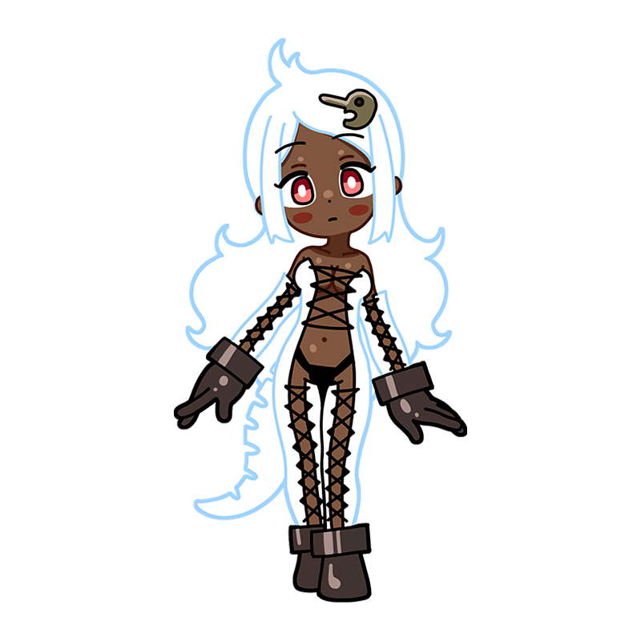
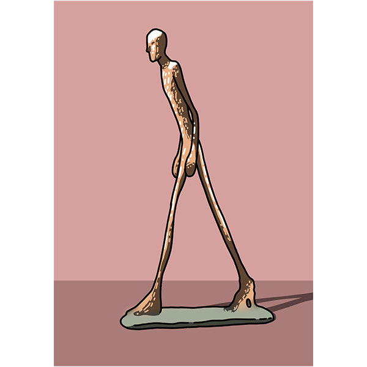
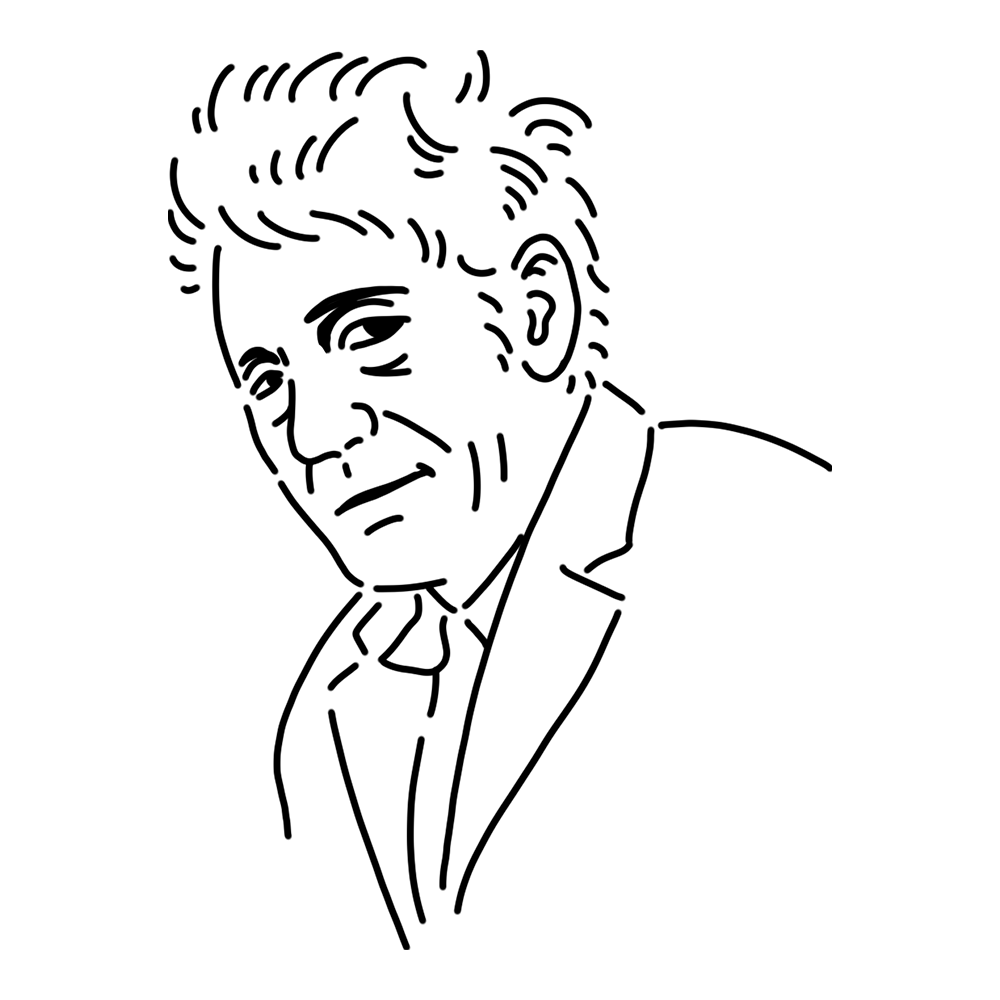

スイス出身、彫刻家のミューズ。ふわふわとしてとらえどころがない性格は、極限まで細く削られた彼女の彫刻のようである。一見スリムな体に見えるが実は”なかなかのもの”の持ち主。
スイス
"歩く男"
"午前4時の宮殿"
"犬" etc.

ジャコメッティの代表作の一つ。同じテーマのものを6つ制作している。極限まで肉体を削り取られたあまりにも弱々しい姿は、まるで「人」という存在の最小単位かのようであり、頼りなくもどこか誇らしげである。19～20世紀に流行した哲学思想「実存主義」に紐づけられることもある。
制作年
1960年
技法・材質
ブロンズ
寸法
180.5 cm x 23.9 cm x 97 cm
所蔵
マーグ財団美術館（フランス）ほか

20世紀スイスを代表する彫刻家であり画家。若き日にシュルレアリスムに傾倒した後、独自の表現にたどり着く。ちょっと押したら倒れてしまいそうなまでに細長く削り出された彫刻は、戦後に訪れた孤独や不安を映し出すものとして支持され、サルトルなどの哲学者が提唱した「実存主義」的と称されることになった。弟・ディエゴは兄の助手、モデルとして献身的に協力し、後に自らも彫刻家・家具デザイナーとしておおいに成功した。
Alberto Giacometti
1901年10月10日
1966年1月11日(64歳没)